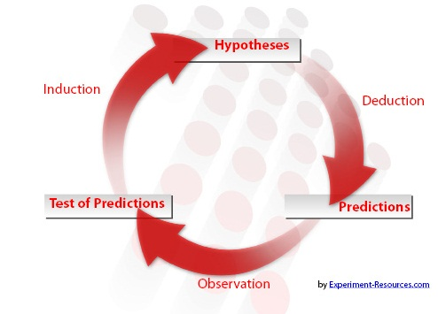
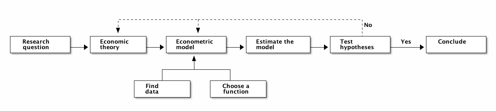
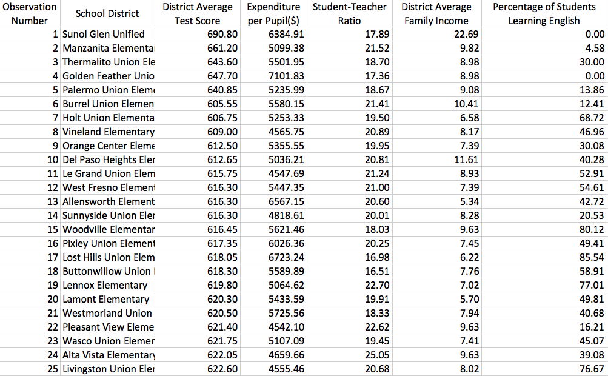
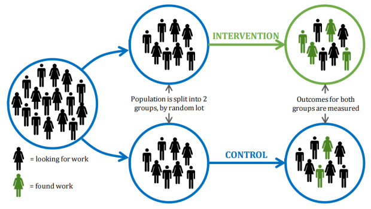

Lecture 1: What is Econometrics?
Table of Contents
1 What is Econometrics?
Definition of Econometrics
Econometricians may give you very different answers for the question of What is Econometrics. The following answers are all right from their respective point of views:
- econometrics is the science of testing economic theories;
- it is the set of tools used to forecasting future values of economic variables;
- it is the process of fitting mathematical economic model to real-world data;
- it is the science and art of using historical data to make quantitative policy recommendations in government and business.
Stock and Watson (2015) define Econometrics as
At a broad level, econometrics is the science and art of using economic theory and statistical techniques to analyze economic data.
Science or art?
Let us dissect the above definition a little bit. First, why is econometrics the science AND art?
Econometrics is a science because it essentially complies with the principle of falsifiability of scientific research, as Karl Popper defined. Figure 1 show a typical reasoning cycle of a scientific research.1

Figure 1: A reasoning cycle of scientific research
Econometricians propose a hypothesis based on either existing economic theories or their own economic reasoning, and then collect data to test the hypothesis that can be rejected or fail to be rejected. Even though an economic theory is not rejected by one set of data at a time period, it can be very likely to be rejected using another set of data at another time period. Then, a new theory or hypothesis will be brought up.
- Econometrics is an art because the data are usually incomplete and unobserved to validate a hypothesis, so we need to use human creativity to reach a balance between scientific rigor and realistic approximation.
The following quote captures the dual nature of econometrics as both science and art:
Econometrics is alchemy since econometricians can create nearly any result desired, but it is also science because econometricians also know how to reject and avoid spurious models. – Hansen (1996)
Economic theory, statistics, and data
A complete process of econometric research inevitably consists of three components: economic theory, statistical techniques, and economic data. When we have a research question, we first need to find or formulate an economic theory that can be either a formal mathematical model or a logical economic reasoning. Guided with this economic theory, we build an econometric model to characterize the relationship between various variables involved in the theory. Then we collect data to measure these variables, and use statistical techniques to estimate the model and test hypotheses that are raised from the theory.

Figure 2: A workflow of econometric research
Let's look at a real example to get a first impression of what is econometrics.
2 Economic Questions We Examine
Question #1: Does reducing class size improve elementary school education?
The story goes like this
There is a proposal for improving basic learning in elementary schools in the U.S. It suggests reducing class size, arguing that with fewer students in the classroom, each students get more of the teacher's attention, there are fewer class disruptions, learning is thus enhanced, and grades improve. Researchers want to find evidence to prove such arguments.
The question of interest
The question of interest in this example is whether there is any effect of reducing class size on improving students' grades in elementary schools.
Before we start a research project, we often consider its practical significance. Simply, who will care such a research? We could list parents, school principles, superintendents of school districts, school board members, and the list goes no, who are at stake with such a research project.
The research design
To investigate the effect of class size on learning performance, we can do either qualitative research or quantitative research. A field study, for example, is a qualitative research in which researchers will interview students and teachers and follow some classes for a period on the spot. Although qualitative research design is not the focus of this course, we should keep in mind of such a research direction.
We focus on a quantitative research design because we want to know exactly how much improvement in students' learning would be when class size is reduced by one student per class. Researchers use randomized controlled experiments (RCE, or randomized controlled trial, RCT) to examine the magnitude of the effect. We will explain RCE in the next section.
The sample and data
Obviously, it is unfeasible to carry out such an experiment nationwide. So researchers draw samples and collect data from 420 California school districts in 1999. We will use this California school dataset throughout this course. So let's take a glimpse. Figure 3 is a screen shot of the first 25 observations in the dataset.

Figure 3: A screen shot of the dataset the California school districts in 1999
This is an example of cross-sectional data. Each row represents a distinct unit of observation, which is a school district in California in this example. All observations are collected in a single year. Although an observation number is assigned to each row, the order bears no real meaning, that is, the sorting of observations is arbitrary. Having the data in hand, the next step is to set up an econometric model.
The econometric model
Since there is no formal economic theory underlying this research, we use our common sense to build an econometric model. The key variables involved in this research is the performance of students' learning and class size. The former is measured by the average test scores in a school district (TestScore), and the latter is measured by student-teacher ratios (STR). For simplicity, we set up a simple linear regression model as follows,
The hypothesis we make is that if STR has a non-zero effect on TestScore. The model is then estimated using some estimation method, and we test the hypothesis with the estimation results using some test statistics. All of these comprise the core of this course.
Three other questions
Chapter 1 in The textbook explaines three other questions that can be answered using different types of data and applying different econometric methods.
- Question 1
- Does reducing class size improve elementary school education?
- Question 2
- Is there racial discrimination in the market for home loan?
- Question 3
- How much do cigarette taxes reduce smoking?
- Question 4
- What will the rate of inflation be next year?
| Questions | Data types | Econometric methods |
|---|---|---|
| #1 | experimental, cross-sectional | multiple regression |
| #2 | observational, cross-sectional | multiple regression with binary dependent variable |
| #3 | observational, panel data | Panel data regression model |
| #4 | observational, time series | multiple regression with lagged dependent variable |
3 Causal Effects and Idealized Experiments
In the example of California School districts, the main concern of the research is whether reducing class size would improve students' learning, comprising a causal relationship between reducing class size (the cause) and improvement in test scores (the consequence). To disentangle from other factors that could influence test scores, researchers conduct a randomized controlled experiment.
Randomized controlled experiment
Randomized controlled experiments (or trials, RCT thereafter) are commonly used in clinical trial to test the effectiveness of medical intervention. In a randomized controlled experiment, the participants are randomly assigned to two groups: a control group and a treatment group. The control group receives no treatment (or placebo), while the treatment group receives the treatment. After a follow-up period, researchers compare the two groups to check the effectiveness of the treatment. See an illustration of RCTs in Figure 4. 2

Figure 4: An illustration of a randomized controlled experiment
The most important advantage of RCT is that randomization minimizes selection bias and the different comparison groups allow the researchers to determine any effects of the treatment when compared with the no treatment (control) group, while other variables are kept constant.3 In the example of California school districts, randomized control experiments ensure that the only systematic difference between the classes in the control group and those in the treatment group is the treatment (reduced class size) itself, with the effects from other confounding factors eliminated.
However, there are the disadvantages of RCTs. Among the most frequently cited drawbacks are:
- Time and costs
- RCTs usually are expensive to undertake and take a long time to observe the effect of treatment.
- Conflict of interest dangers
- RCTs may be funded by special interest groups so that its objectivity is doubtful.
- Ethnics
- Especially in social science, we cannot impose some treatment due to ethnic concerns.
Causal effect
Causal effect is defined to be the effect on an outcome of a given action or treatment as measured in an ideal RCT. Although it is almost impossible to do an ideal RCT, the concept of the ideal randomized controlled experiment does provide a theoretical benchmark to define causal effects in research design, while the implementation of such an experiment is nearly impossible. Most econometric methods to be taught in this course concern detecting the causal effect among variables.
4 Data Sources and Types
Experimental versus observational data
Experimental data come from experiments designed to evaluate a treatment or policy or to investigate a causal effect. Observational (or nonexperimental) data are collected using surveys, and administrative records.
The problem of using observational data to estimate causal effects is that the "treatment" is not randomly assigned, so it is challenging to sort out the effect of the "treatment" from other relevant factors. Much of econometric methods are developed to deal with causality using observational data.
Cross-sectional data
Data on different entities for a single time period are called cross-sectional data. The sequence of each observation number is arbitrarily assigned. The data in the example of California school districts are cross-sectional. Cross-sectional data can be experimental data or observational data.
Time series data
Time series data are data for a single entity collected at multiple time periods. The sequence of each record is based on the time period it happened, which bears real meaning in understanding the trend. An example of time series data is the consumer price index (CPI) of China by month from 1990 to 2014. Most time series data are observational. This course will not cover any chapters regarding time series data, but it will be another course in our econometric series.
Panel data
Panel data, also called longitudinal data, are data for multiple entities in which each entity is observed at two or more time periods. Panel data are very useful for estimating causal effects. If time permits, we will cover some basic use of panel data at the end of this course.
Footnotes:
Source of Figure 1: Martyn Shuttleworth (Sep 21, 2008). Falsifiability. Retrieved February 10th, 2017, from Explorable.com: https://explorable.com/falsifiability.
Source of Figure 4: Emma Tomkinson (May 20, 2013). Retrieved February 12th, 2017, from https://emmatomkinson.com/2013/05/20/randomised-controlled-trials-rcts-in-public-policy/.
Randomized controlled trial. In Wikipedia. Retrieved February 12th, 2017, from https://en.wikipedia.org/wiki/Randomized_controlled_trial.